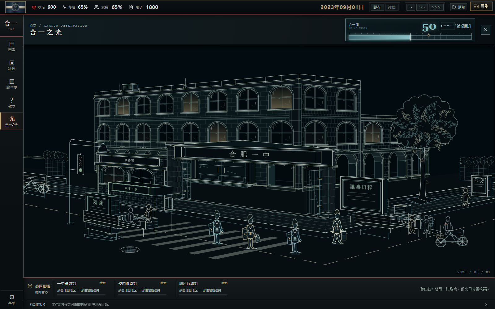

<!doctype html>
<html lang="zh-CN"><meta charset="utf-8"><meta name="viewport" content="width=device-width,initial-scale=1"><title>合一之光 · 拱廊与窗灯复核</title>
<style>
*{box-sizing:border-box}body{margin:0;background:#060e12;color:#c9d3c7;font:14px/1.6 system-ui,sans-serif}main{max-width:1680px;margin:auto;padding:22px}header{display:flex;align-items:center;justify-content:space-between;border-bottom:1px solid #52777b;padding-bottom:14px;gap:20px}h1{font:24px Georgia,SimSun,serif;letter-spacing:.15em;margin:0;color:#e0d5b7}small{font:11px monospace;letter-spacing:.12em;color:#82a5a7}nav{display:flex;flex-wrap:wrap;align-items:center;gap:8px;margin:16px 0}button{border:1px solid #47656a;background:#101e23;color:#afc4bd;padding:9px 16px;font:inherit;cursor:pointer}button[aria-pressed=true]{border-color:#bba979;color:#eadab3;box-shadow:inset 0 -2px #bba979}button:hover,button:focus-visible{outline:1px solid #83c9d0}figure{margin:0;border:1px solid #42656b;background:#020b10}img{display:block;width:100%;height:auto}figcaption{padding:9px 14px;border-top:1px solid #42656b;color:#97b3b0}p{margin:12px 0;color:#98aca8}.time{margin-left:auto;display:flex;align-items:center;gap:6px}.time button{padding:8px 12px}@media(max-width:650px){main{padding:10px}header{display:block}h1{font-size:19px}.time{margin-left:0;width:100%}}
</style>
<main><header><h1>合一之光 · 拱廊与窗灯</h1><small>v9.4.4 / 2026.10.20 / 实机定格</small></header>
<nav aria-label="画面对照"><button id="before" aria-pressed="false">修复前</button><button id="after" aria-pressed="true">修复后</button><span class="time">光影定格 <button data-time="0" aria-pressed="true">0 秒</button><button data-time="8000" aria-pressed="false">8 秒</button><button data-time="16000" aria-pressed="false">16 秒</button></span></nav>
<figure><figcaption id="caption">修复后 · 0 秒：转角两面共用层高，低翼楼在转角后接出；拱顶、侧壁和地面形成连续进深。</figcaption></figure>
<p>三张光影图取自同一个暂停存档。游戏日期与资源保持不变，展示动画继续运行；切换时间可以比较各房间的明暗变化。</p>
</main>
<script>
const files={0:'2026-10-20-democracy.png',8000:'2026-10-20-lights-8000.png',16000:'2026-10-20-lights-16000.png'};let current=0;
function show(before=false){document.querySelector('#before').setAttribute('aria-pressed',String(before));document.querySelector('#after').setAttribute('aria-pressed',String(!before));document.querySelector('#scene').src=before?'2026-10-20-before-arcade.png':files[current];document.querySelector('#scene').alt=before?'修复前的拱廊两翼':'修复后的拱廊与错峰窗灯';document.querySelector('#caption').textContent=before?'修复前：低翼楼直接接在高楼转角，两翼腰线错层；窗灯变化接近不可见。':'修复后 · '+current/1000+' 秒：完整转角、统一层高与拱廊进深；各房间独立亮灭，廊下反光缓变。';for(const b of document.querySelectorAll('[data-time]'))b.setAttribute('aria-pressed',String(!before&&Number(b.dataset.time)===current));}
document.querySelector('#before').onclick=()=>show(true);document.querySelector('#after').onclick=()=>show();for(const b of document.querySelectorAll('[data-time]'))b.onclick=()=>{current=Number(b.dataset.time);show();};
</script></html>
